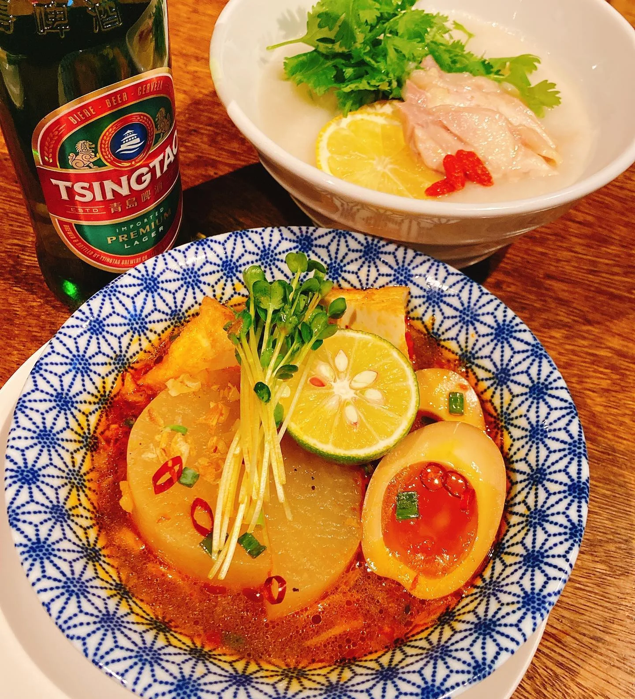
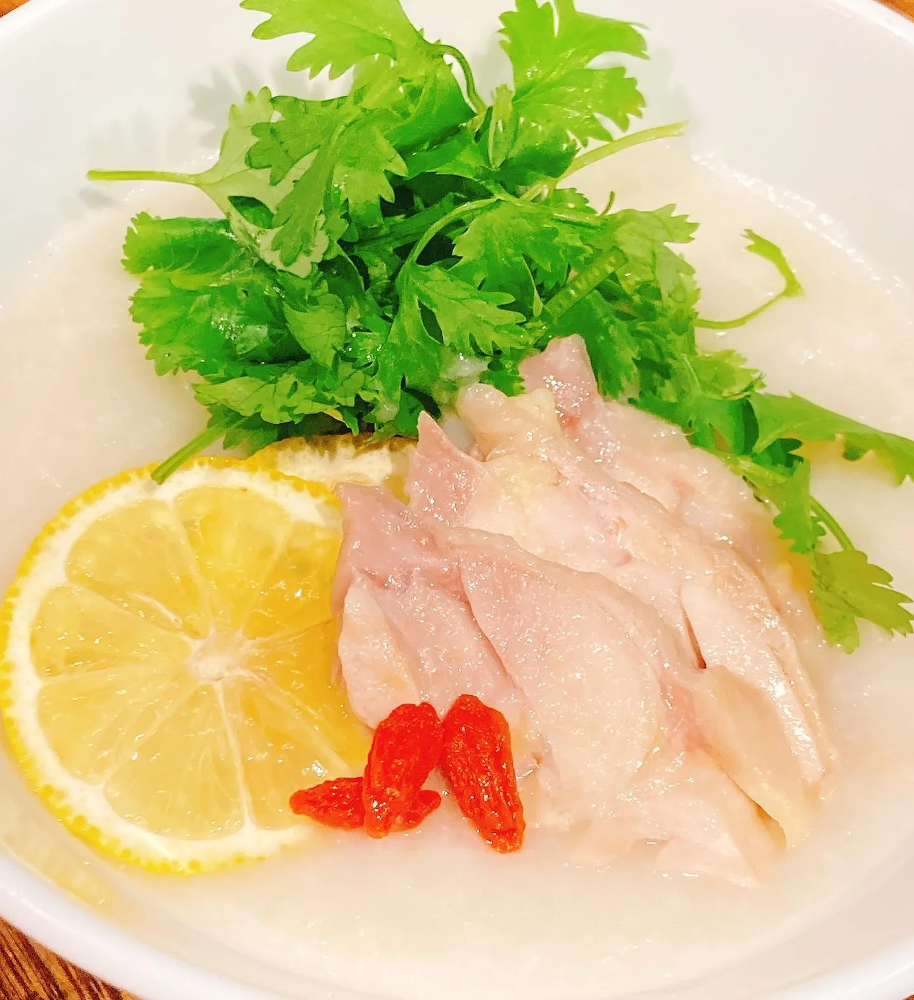
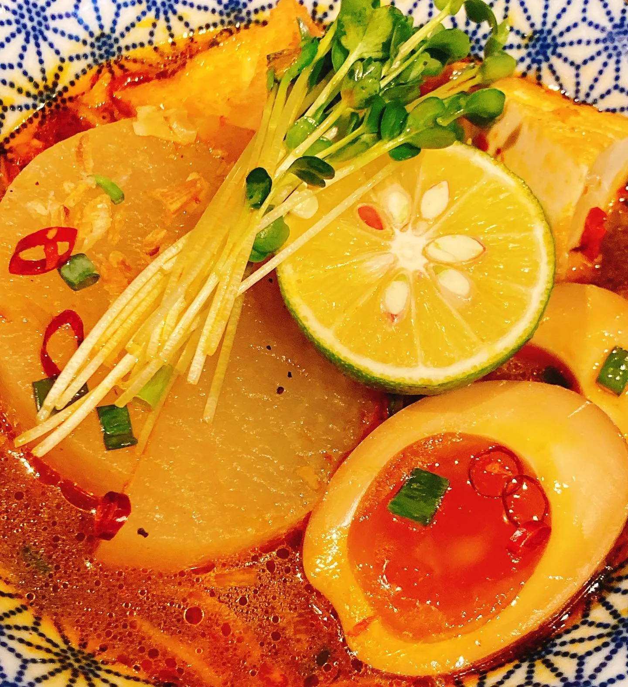
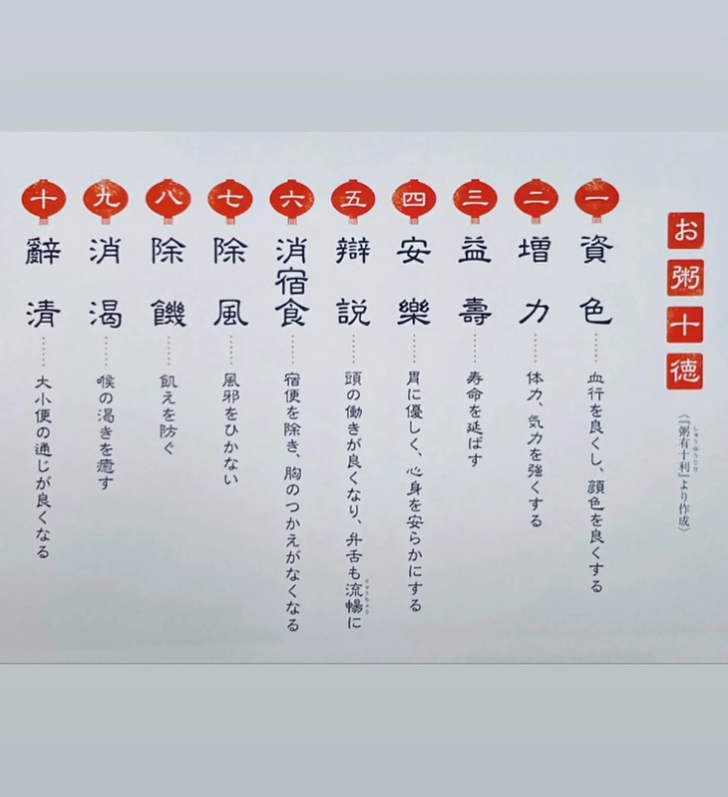
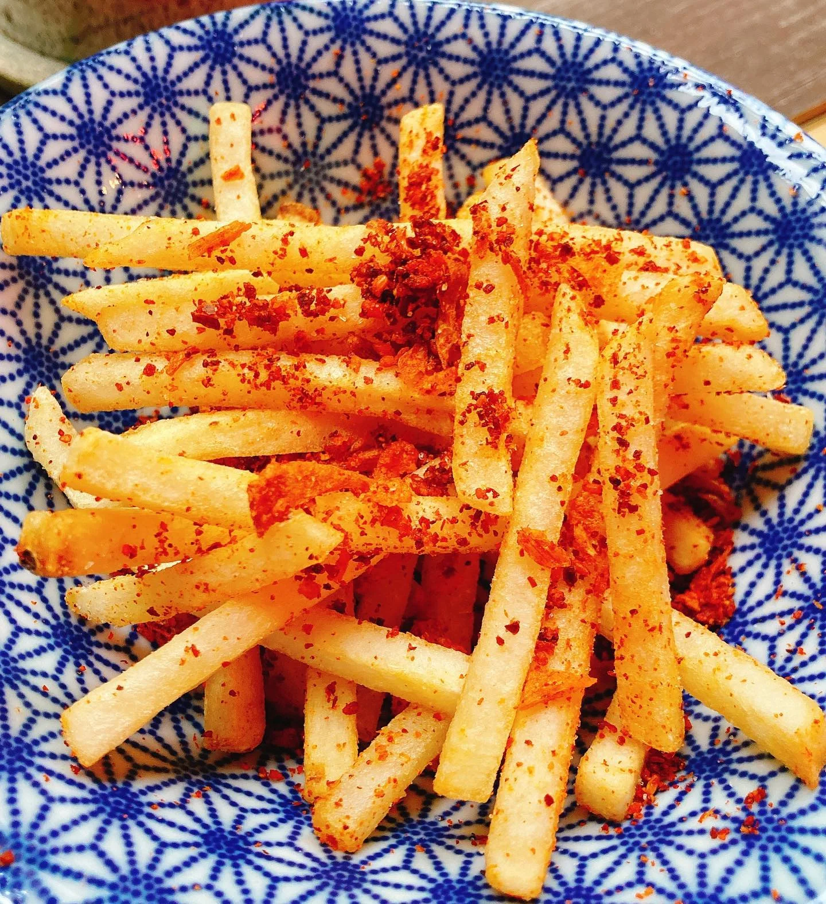

2020年9月30日
奥さん！！





奥さん！！ 明日から１０月ですね！ 【マーラーおでん】 今年も始まりました！ 秋の夜長にピリ辛おでんを！ 【鶏とレモンの中華粥】 １０月スタート！！ ぜひ、酒飲みの方に食べてもらいたいです。身体を大事にしてもらいたい気持ちで作りました！ お粥は色々と効能があるみたいですよ！ 両方ともシーズンで内容を替えていきたいと思います！！ おまけでポテトフライもメニューイン！ぜひ夜中に食べてもらいたいジャンキーなやつ！ １０月もよろしくお願いいたします🍁🍁🍁 #中華バル#中華#中華料理#福島区グルメ#路地裏#B級グルメ#中国#チャイニーズ#路地裏チャイニーズ有馬#有馬#シュウマイ#餃子#点心#フォローミー#followme#おでん#中華粥#ポテトフライ#秋#路地裏チャイニーズ有馬